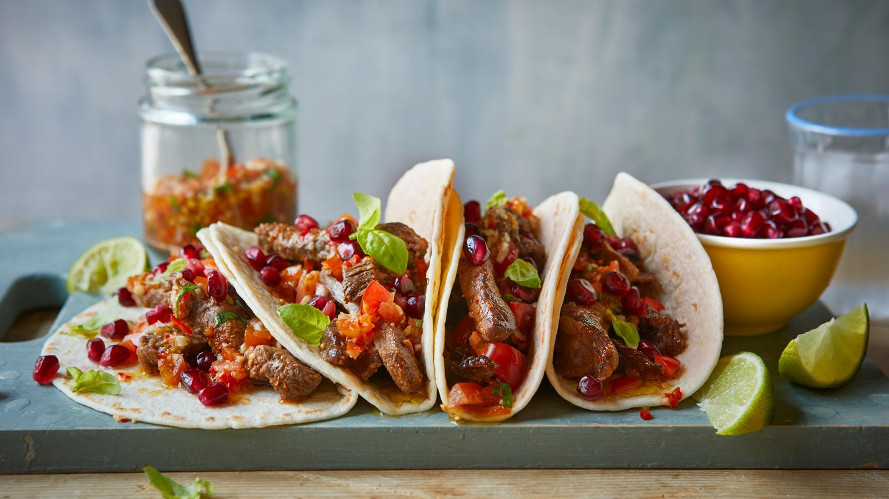

Air fryer beef tacos

Air fryer beef tacos
The air fryer is just the thing to quickly cook strips of steak for this beef taco recipe, served with a tomato and chilli dressing. Feel free to riff on the herbs - basil is great, but you might be a fan of the traditional coriander.
It makes 8 tacos, so it’s ideal for sharing.
Beef Tacos is one of our favorite weeknight family meals, especially on Taco Tuesdays!
I have a quick homemade taco seasoning that I love to use for this recipe so I can cook the taco meat in 10 minutes.
Give it a try and it’ll be your new go-to for taco night too!
Ingredients
- 500g/1lb 2oz rump or sirloin steak, cut into strips or small chunks
- 1 tsp vegetable oil
- 1 tbsp Cajun seasoning
- 1 lime, juice only
- 8 small soft tortilla wraps
- lime wedges, to serve
- pomegranate seeds, to serve (optional)
For the tomato and basil dressing
- handful fresh basil
- 3 tbsp olive oil
- 2 garlic cloves, crushed
- 1 red chilli, seeds removed, chopped
- handful cherry tomatoes, finely chopped
- salt and freshly ground black pepper
Steps:
- Preheat the air fryer to 200C.
- Coat the steak in the oil, Cajun seasoning and lime juice. Air-fry the steak for
6 minutes then shake the air fryer basket and cook for a further 2 minutes.
- Meanwhile, to make the dressing, combine all the ingredients in a bowl.
- Wrap the tortillas in foil and add to the air fryer for 2 minutes to warm through.
Alternatively, char them over a gas hob.
- Add the steak to the tortillas and top with the dressing. Serve with lime wedges to squeeze over. If you like,
sprinkle over some pomegranate seeds for a fresh, juicy contrast.